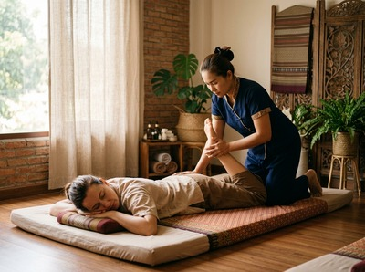

Glasgow City Centre is the commercial and cultural heart of the city, home to thousands of office workers, residents, and visitors moving through its streets every day.
From the Victorian grandeur of George Square to the offices on St Vincent Street and Blythswood Hill, the city centre draws lawyers, finance workers, creatives, and retail staff. Many spend long hours at a desk or on their feet. For anyone looking for thai massage in Glasgow City Centre, Serendipity Massage Therapy & Wellness is right in the middle of it all — at Central Chambers on Hope Street.
Serendipity is at Floor 1, Suite 50, Central Chambers, 93 Hope Street, G2 6LD. That puts it in the heart of the city's professional core. For the thousands working around Blythswood Square, St Vincent Street, or Renfield Street, it's a short walk from the office.
Whether you need a session at lunch, after work, or on a day off in the city, the location makes it easy to fit in. You can book your session online in a few minutes and arrive ready to switch off.

Neck pain, shoulder tension, and the physical toll of desk work are common in the city centre. Serendipity addresses those problems directly. Treatments are designed to release deep muscle tension, restore range of motion, and help you function better.
Serendipity offers a full range of therapeutic massage and wellness treatments. Each one is carried out by a trained therapist using techniques developed by head therapist Jariya Malone.
From almost anywhere in the city centre, Serendipity on Hope Street is easy to reach on foot. Glasgow Central Station is under five minutes' walk. Buchanan Street subway is around seven minutes away.
St Enoch subway is also within easy walking distance for those coming from the southern end of the centre. Several bus routes serve Hope Street directly, including the 1, 4, 6, 18, and 18A. The studio is at Floor 1, Suite 50, Central Chambers, 93 Hope Street, G2 6LD.
Once you have found your treatment, secure your appointment online ahead of your visit to avoid missing your preferred time.
Serendipity is a professional team practice — not a solo operator or a chain. Every therapist works to the same standard. All are trained in the techniques Jariya Malone developed from within the traditional Thai massage tradition.
That consistency matters for clients who book regularly to manage tension, stress, or postural strain from office work. Many return on a regular basis because the results are reliable. This is not a one-off treat — it is the kind of care that makes a real difference when you commit to it.
Glasgow City Centre is the commercial, cultural, and civic heart of one of Scotland's largest cities. It is home to some of the UK's most important financial and professional services businesses. Eight of the ten largest insurance companies in the UK have a presence here. For more context, see City centre on Wikipedia.
Serendipity Massage Therapy & Wellness is at Floor 1, Suite 50, Central Chambers, 93 Hope Street, Glasgow G2 6LD. It sits in the professional core of the city centre. Glasgow Central Station, Buchanan Street subway, and St Enoch subway are all a short walk away. If you work or live anywhere in the centre, you are likely already close.
Hope Street is one of the most accessible streets in the city. Glasgow Central Station is under five minutes on foot. Buchanan Street and St Enoch subway stations are both within easy walking distance. Bus routes 1, 4, 6, 18, and 18A all stop on or near Hope Street. In most cases, the easiest option is to walk from wherever you are in the centre.
Same-day availability depends on the schedule, but it is worth checking. You can book online to see what slots are open. For guaranteed availability — especially at lunchtime or early evening — booking a day or two ahead is advisable.
Traditional Thai Massage works well for office workers with neck pain, tight shoulders, and postural strain. It uses acupressure and assisted stretching to release deep tension and restore range of motion. Thai Oil Massage is a good alternative if you prefer a more flowing treatment that still targets those areas with real depth.
For current hours and real-time availability, check the online booking page at serendipitymassage.co.uk/book-now/. You can also call 0141 673 6630 or email relax@serendipitymassage.co.uk. The team is happy to help you find a time that fits your schedule.